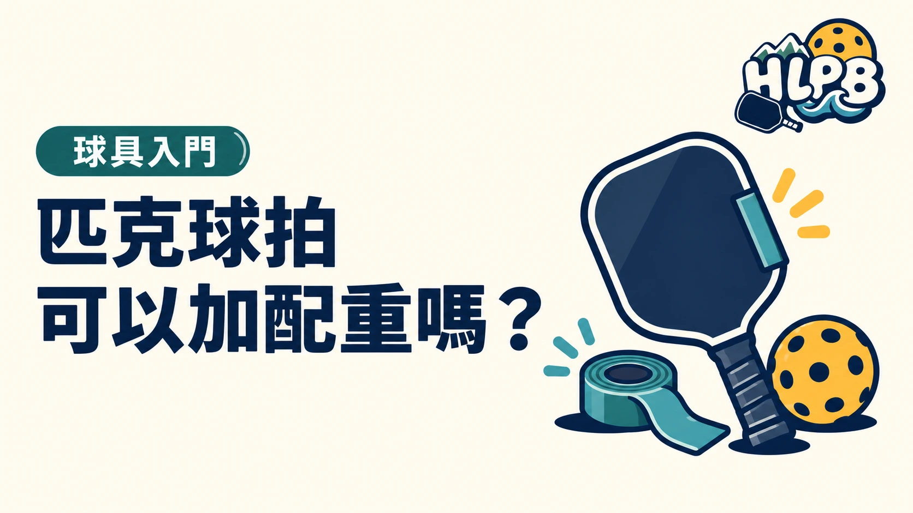

USA Pickleball 說明，已核准球拍若正確安裝外加配重，且仍符合其他器材規格，可以用於其認可賽事。這不代表所有自行改裝都符合規定。
調整前先查球拍是否在核准清單，再確認配重及握把改裝的限制。參加花蓮比賽時，也要看主辦單位採用的器材規範。不確定就先詢問，避免到場才發現不能使用。
配重前先回答：你到底想改哪個感受？
想調整揮動負擔、握持感或偏心擊球反應，是不同需求。配重不是把一支拍升級成另一個等級，而是改變現有球拍的設定。尚未掌握揮重與扭重時，可以先讀相關比較，再決定是否需要動手。
HLPB 建議保留一份配重前後紀錄
先記下球拍完整型號、原始重量、現有握把布及護邊狀態。每次只調整一項，記錄安裝位置與增加重量，再在相近用球及練習條件下比較。不要同時換握把、加護邊又加多處配重，否則很難分辨造成差異的是什麼。
| 檢查階段 | 要留下的資訊 |
|---|---|
| 調整前 | 原始重量、配件與想改善的感受 |
| 安裝後 | 位置、增加重量、是否牢固，以及尺寸是否仍合規 |
| 試打後 | 連續回拍、短球控制與偏心反應的差別 |
| 決定保留前 | 是否符合原廠條件與預定賽事的器材規範 |
有配重，不代表整支拍都自動合規
USA Pickleball 對外加配重的說明，前提是已核准球拍正確安裝，且其他器材規格仍符合要求。這項允許不能擴大解讀成任意鑽孔、改拍面或修補結構都可以。若調整後揮動更吃力，先回到原設定比較；不要只為追求較高數字持續疊加。
最後查證：2026-10-19｜資料來源：USA Pickleball Aftermarket Paddle Weights and Aftermarket Grip Aids
返回文章列表